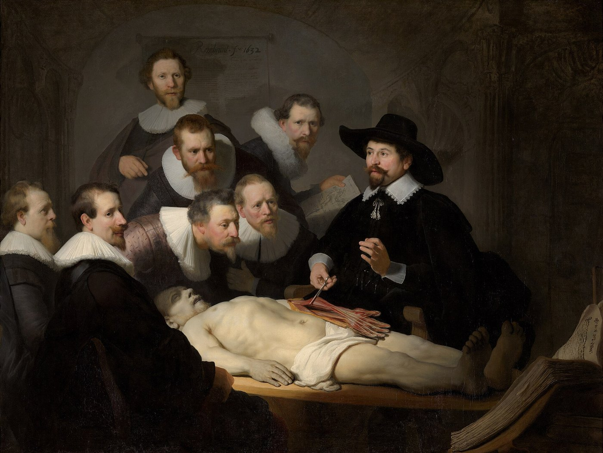

דילמות מדיקו-לגליות
אוטונומיה, הסכמה מדעת, כשירות, מקבלי החלטות, טעויות וגילוי נאות: העקרונות האתיים של הספר. ובקצרה: מה אומר החוק בישראל
בסוף המפגש תדעו
- למנות את ארבעת העקרונות של האתיקה הרפואית ולהסביר איך הם מתנגשים
- לפרט מה חייבת לכלול הסכמה מדעת לניתוח ומתי מטפלים בלי הסכמה
- להעריך כשירות לקבל החלטות ולדעת מי מחליט כשהמטופל לא יכול
- להבחין בין אירוע חריג לטעות ולהכיר את העקרונות של שקיפות, דיווח ותמיכה בצוות
- לזהות את הדילמות שבהן צריך לערב בכיר/ה, את הייעוץ המשפטי או ועדת אתיקה של בית החולים
שיעור באנטומיה, שיעור באתיקה

👆 לחצו על אזור בציור כדי לקרוא עליו
אף אחד לא שאל אותו. היום, על פי עיקרון הכבוד לאוטונומיה, אדם כשיר מחליט על גופו. בלי הסכמה מדעת לא מנתחים, חוץ מבמצבים מוגדרים
לפני 60–70 שנה עוד היה מקובל ש"הרופא יודע הכי טוב". הגישה הפטרנליסטית התחלפה בהחלטה משותפת. כשיש כמה אפשרויות סבירות, ההעדפה של המטופל קובעת
מקצוע מוגדר באגודה מקצועית, גוף ידע, הכשרה מוסדרת, רישוי, פיקוח עמיתים וקוד אתי. המנתח מקבל אמון מיוחד, כי הוא מחליט בשביל אדם מורדם
היום מה שלא תועד כאילו לא נעשה: ההסבר שניתן, ההסכמה, ה-time-out וההנחיות המקדימות של המטופל צריכים להיות ברשומה וזמינים
ארבעה עקרונות, בלי סדר עדיפות קבוע
תהליך, לא חתימה
מה נכנס לשיחה
- האבחנה
- הניתוח המוצע ומטרתו: מניעה, שליטה במחלה או הקלה
- הסיכונים
- הסיכוי שהניתוח יצליח
- החלופות, כולל לא לנתח
- והכול מול מטרות המטופל
מתי זה מסתבך
האם המטופל יכול להחליט?
ארבע יכולות
מקבל החלטות חלופי
- אם המטופל מינה מראש מיופה כוח: הוא מחליט, בכל מה שהמטופל היה מחליט
- אם לא: בדרך כלל בן או בת הזוג. אחריהם ילדים או הורים. בארצות הברית זה תלוי בחוק של כל מדינה
- שיפוט מחליף: מטופל שהביע את רצונו בעבר. מחליטים לפי מה שהוא היה רוצה
- טובת המטופל: מי שמעולם לא יכול היה להביע רצון (תינוק, אדם עם מוגבלות שכלית קשה)
חוק זכויות החולה, התשנ״ו-1996
- חירום רפואי: טיפול דחוף כשאי אפשר לקבל הסכמה. לניתוח נדרשת הסכמת שלושה רופאים, אלא אם החירום לא מאפשר
- סכנה חמורה ומטופל מסרב: רק באישור ועדת אתיקה, אחרי שמיעת המטופל ובתנאים שבחוק
סיכום קצר בלבד, לא ייעוץ משפטי. היועץ/ת המשפטי/ת של בית החולים י/תפרט במפגש את הנוסח המלא, את הפסיקה ואת הנהלים
"חסר תוחלת" וסירוב לטיפול
- רופאים לא חייבים להציע טיפול שאין לו סיכוי סביר להצליח
- אבל ל"חסר תוחלת" אין הגדרה אובייקטיבית. טיפול יכול להיות חסר תוחלת רק ביחס למטרה מסוימת
- דוגמה מהספר: בן 92 עם שיטיון מתקדם ואיסכמיה של המעי. ניתוח כנראה לא יחזיר אותו לחיים ארוכים, אבל אם המטרה היא שהנכדים יספיקו להגיע, ייתכן שהוא סביר
- חובת הרופא: להמליץ נגד טיפולים שלא ישיגו את מטרות המטופל. וגם להבטיח המשך טיפול
כשמשהו משתבש
- אירוע חריג הוא תוצאה מזיקה של הטיפול. הוא לא בהכרח טעות. לא תמיד אפשר למנוע אותו
- "אירועים שאסור שיקרו": מטופל לא נכון, צד לא נכון, ניתוח לא נכון, פריט שנשכח בגוף
- ניתוח בצד הלא נכון: הגורם המוביל הוא אי-ציות לנוהל (83.8%). אחריו: אי-עיון ברשומה (41.2%)
לדבר עם המטופל, לדווח, לתמוך בצוות
מה הייתם עושים?
הצגת תשובה
קודם כשירות: האם הוא מבין, מעריך ושוקל? הבלבול מרמז שלא. מחפשים מיופה כוח או בן משפחה שמחליט לפי מה שאבא היה רוצה. מטופל לא כשיר שמתנגד הוא בדיוק המקום לערב מיד בכיר/ה ואת הייעוץ המשפטי. החוק בישראל קובע לכך מסלולים מוגדרים (סעיפים 14א ו-15). מתעדים כל שלב
הצגת תשובה
עונים בכנות. חוסר ניסיון במנתח הוא מידע שמטופל סביר ירצה לדעת לפני שיחליט. אומרים גם מי ילווה את הניתוח ומה החלופות
ועוד שתיים
הצגת תשובה
היא כשירה, לכן המידע שלה. שואלים אותה כמה היא רוצה לדעת ומי תרצה שישתתף בשיחה. מטופל רשאי לבחור לא לשמוע הכול. בישראל, אי-מסירת מידע רפואי למטופל אפשרית רק באישור ועדת אתיקה, אם המסירה עלולה לגרום לו נזק חמור (סעיף 13(ד))
הצגת תשובה
עוצרים. לא מתחילים עד שהפער נפתר מול המטופל, הרשומה וההדמיה. זה בדיוק מה שהנוהל נועד לתפוס. מדווחים כ"כמעט-אירוע" כדי שהמערכת תלמד. היררכיה שטוחה עוזרת: כל אחד בחדר צריך להרגיש חופשי להעיר
מחקרים ועדכונים שכדאי להכיר
209 מחקרים, יותר מ-107 אלף משתתפים. כלי החלטה משפרים את הידע ואת הערכת הסיכון, מורידים את התחושה של חוסר מידע ומגדילים את ההתאמה בין הבחירה לערכים (RR 1.75). בלי הבדל בחרטה על ההחלטה
Stacey D et al. Cochrane Database Syst Rev 2024;1:CD001431118 מטופלים לפני כריתת תוספתן, כריתת כיס מרה, תיקון בקע מפשעתי או פונדופליקציה. סרטון הסבר שיפר את הידע על הניתוח יותר מהסכמה רגילה. בשביעות הרצון לא היה הבדל מובהק
Bremer K et al. Surg Endosc 2024;38(8):4641-7196 מנתחים בסינגפור. 69% זכרו אירוע חריג בזמן ניתוח. 53% דיווחו על אשמה ו-45% על חרדה. רק 18.5% קיבלו תמיכה רגשית
Yaow CYL et al. BMC Health Serv Res 2024;24:512תיקון לחוק זכויות החולה: למטופל בגיר שלא מסוגל להחליט וזקוק לטיפול דחוף, העובד/ת הסוציאלי/ת במוסד מאשר/ת בן משפחה כמקבל החלטות, לשישה חודשים
חוק זכויות החולה, התשנ״ו-1996, סעיפים 14א–14ג (תיקון התשפ״ד), נוסח משולב btl.gov.ilחמישה דברים לקחת למחלקה
- ארבעה עקרונות: אוטונומיה, היטיבות, אי-גרימת נזק וצדק. שוקלים אותם יחד
- הסכמה מדעת היא שיחה: אבחנה, ניתוח, סיכונים, סיכוי וחלופות. בסוף בודקים הבנה
- קודם כשירות. בלי כשירות: מקבל החלטות שמחליט לפי מה שהמטופל היה רוצה
- אירוע חריג אינו בהכרח טעות. שקיפות, דיווח ולמידה, בלי חיפוש אשמים
- בדילמה לא מחליטים לבד: בכיר/ה, עבודה סוציאלית, הייעוץ המשפטי וועדת האתיקה